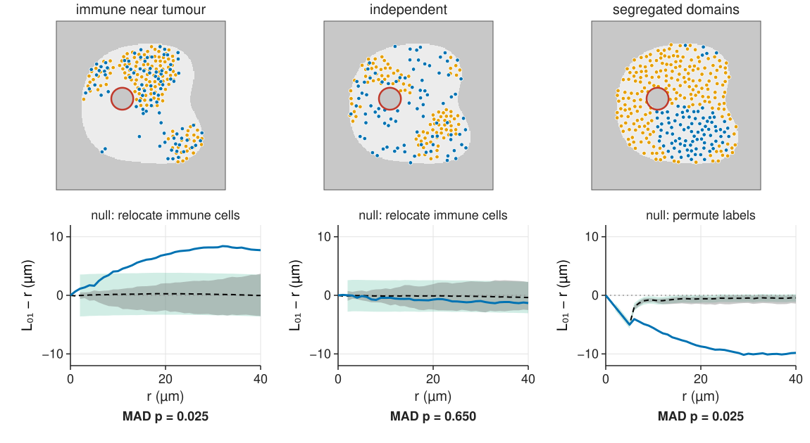
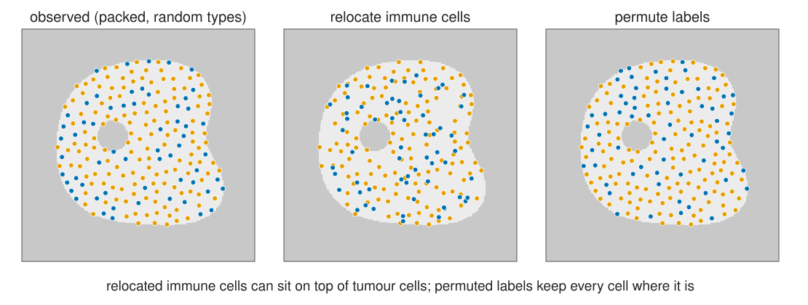
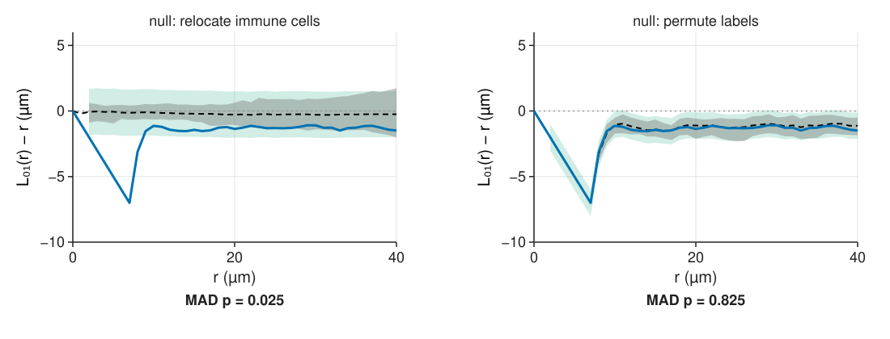
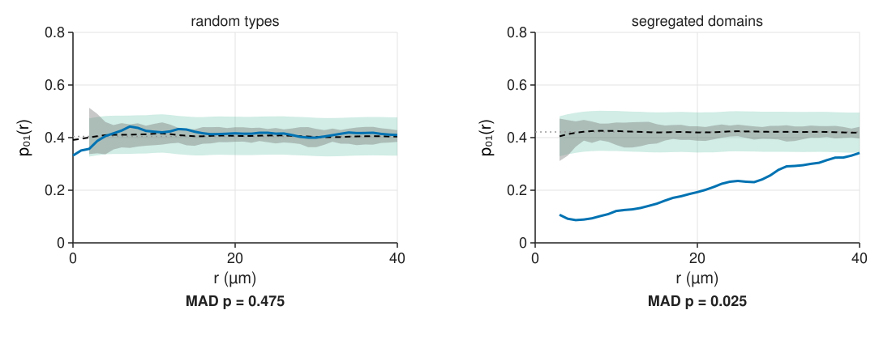
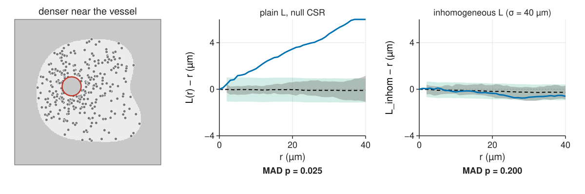
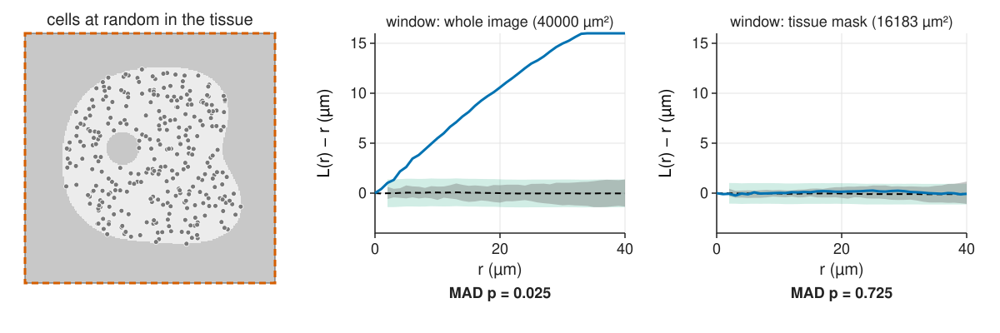
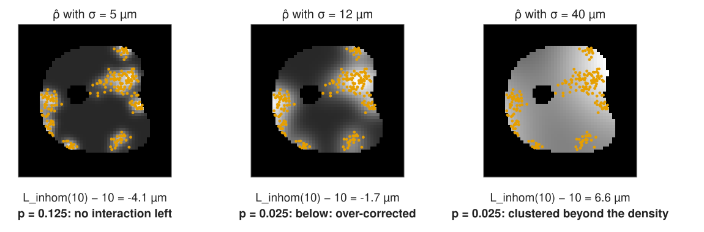

Each cell carries a mark: its type (from a multiplexed stain, a classifier), or a number (size, intensity). Questions: do the types attract (immune cells near tumour cells), repel (segregated domains), or ignore each other? Is each type’s own pattern clustered?
Cross-K and cross-L

Count type-1 cells around type-0 cells, compare with \pi r^2: K_{01}(r), and L_{01}(r) - r. Above 0: attraction; below: segregation. (The object colocalisation unit used it for two-colour spots.)
The math: cross-K
\rho_1 K_{01}(r) = E[\text{number of type-1 points within } r \text{ of a typical type-0 point}].
Estimator (translation weights as in unit 3): \hat K_{01}(r) = \frac{|W|}{n_0 n_1}\sum_{i \in 0}\sum_{j \in 1} w_{ij}\,[d_{ij} \le r].
If the two types are independent and one of them is stationary, K_{01}(r) = \pi r^2, whatever pattern each type has on its own (clustered nests, regular spacing).
Symmetric: K_{01} = K_{10} in theory; estimates differ slightly with corrections.
Cross pair correlation g_{01} = K_{01}'/(2\pi r).
Two null models, two questions
Independence: two populations that arrived separately; is their arrangement related?
Keep each type’s own pattern, move one type as a whole: shift it (toroidal wrap, only in a rectangle) or relocate its points at random inside the tissue.
Random labelling: the cells are where they are; is the type distributed at random over them? (Which cells become activated, which divide?)
Keep all positions, permute the labels.
Under it K_{00} = K_{11} = K_{01} = K (of all cells): test K_{01} - K or K_{11} - K_{00}.
Clustered positions do not disturb this test: it conditions on them.
Picking the wrong null

Relocated immune cells may land on top of tumour cells, which no real cell can do. Permuted labels keep every cell where it is and only shuffle the types.
The two nulls disagree

Cells cannot overlap, so no immune cell is within 7.5 µm of a tumour cell. Relocation ignores that and reports “repulsion” (p = 0.025). Permuting labels respects it: random (p = 0.83). In packed tissue, random labelling asks the right question.
The math: random labelling
Give each point of a process with K function K type 1 with probability p_1 and type 0 with p_0 = 1 - p_1, independently of everything else.
A pair at distance r is a 1–1, 0–0 or mixed pair with probabilities p_1^2, p_0^2, 2p_0p_1, whateverr is. So the type-specific pair densities are p_ap_b\rho^2g(r) and K_{00} = K_{11} = K_{01} = K.
Mark connection function: p_{01}(r) = 2p_0p_1 (mixed pairs, either order) for all r.
Independence instead: K_{01} = \pi r^2, but K_{00} and K_{11} are free.
Toroidal shift preserves each type’s second-order structure exactly in a rectangle (the wrapped pattern is stationary on the torus). In an irregular mask the shifted points fall outside the tissue or onto the vessel: use relocation (if each type is roughly CSR within the mask) or a model of each type.
The mark connection function

Of the pairs at distance r, which fraction is a tumour–immune pair?
Random labels: 2p_0p_1 at every r (30 % immune: 2 \cdot 0.3 \cdot 0.7 = 0.42).
Below: neighbours tend to be of the same type (segregation). Above: mixing.
Easy to read for many types: a matrix of curves p_{ab}(r).
For a continuous mark (cell size): the mark correlation asks whether neighbours of large cells are large.
Try it: two types
An uneven density

Cells are denser near the vessel, but do not interact. The plain K says “clustered” at every r: pairs are found more often where the density is high. A first-order effect read as a second-order one (unit 1).
Three responses
The right window: use the tissue mask, not the image. Often the biggest “effect” disappears (next slide).
Inhomogeneous K: weight each pair by 1/(\hat\rho(\mathbf x_i)\,\hat\rho(\mathbf x_j)), with \hat\rho the kernel estimate of unit 1 (or a model of ρ from a covariate, e.g. the distance to the vessel). Same reading: L_\text{inhom} - r = 0 means “no interaction beyond the density”. Null: inhomogeneous Poisson from \hat\rho.
Random labelling for typed questions: it conditions on the positions and ignores the density altogether.
The window matters

The same random cells: “clustered” when the empty glass around the tissue is counted as searched, random when the window is the tissue (16 183 of 40 000 µm²).
For an inhomogeneous Poisson process the pair density is \rho(\mathbf u)\rho(\mathbf v); dividing each pair by the true \rho(\mathbf x_i)\rho(\mathbf x_j) cancels it pair by pair, and with the translation weights the expectation is \pi r^2 (the argument of unit 3 with g \equiv 1).
More generally it equals \pi r^2 whenever g(\mathbf u, \mathbf v) depends only on \mathbf u - \mathbf v (“second-order intensity-reweighted stationarity”).
Use the leave-one-out estimate \hat\rho(\mathbf x_i) = \sum_{j \ne i}k_\sigma(\mathbf x_i - \mathbf x_j)/e(\mathbf x_i); including the point itself biases \hat K_\text{inhom} down.
The null simulations draw from \hat\rho and re-estimate\hat\rho with the same bandwidth.
The honest limit

From one pattern, “uneven density” and “clustering” cannot be fully separated. A bandwidth small enough to follow the clusters explains them away as density; a large one leaves them as interaction. Fix the bandwidth from a scale argued in advance (tissue structure, not cell clusters), or model ρ from a covariate or another cell type.
Try it: an uneven density
Where this leads
Tissue-scale analysis of multiplexed images: the neighbourhood composition of each cell, cell–cell interaction maps between many types (the same counts, per cell instead of averaged).
Finding the clusters, not just detecting clustering: density-based clustering, k-means, and fitting cluster models (κ, σ) to \hat K.
Experiments: one summary per image, experiments as n (envelopes, replicates).
Summary
Marks turn one pattern into several; cross-K / cross-L count one type around another.
Independence (shift or relocate one type) and random labelling (permute types) answer different questions. In packed tissue, relocation invents repulsion; permutation does not.
Under random labelling all K_{ab} are equal and p_{01} = 2p_0p_1; the mark connection function shows mixing or segregation.
An uneven density looks like clustering. Use the tissue mask, the inhomogeneous K (pairs weighted by 1/\hat\rho\hat\rho), or random labelling.
From one pattern, density and clustering are separated only by a bandwidth chosen in advance.